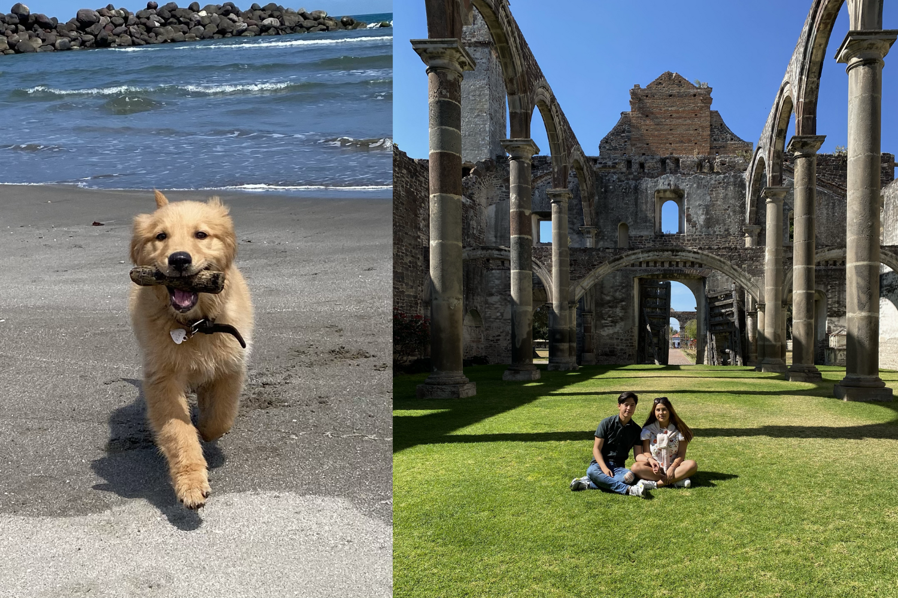
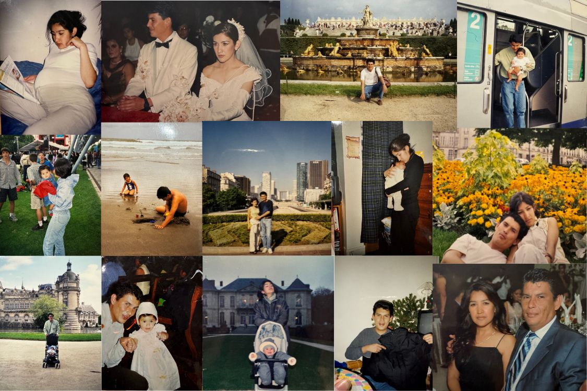

¿Quién soy yo?

Hola, mi nombre es Daniela Macías Parra. Nací el 21 de febrero en París, Francia, pero actualmente estoy estudiando en la universidad en la ciudad de Puebla. Desde que era pequeña, siempre me ha gustado ser una persona sociable, capaz de hacer amigos con facilidad. A la edad de un año, regresé de París y me mudé a Puebla. Sin embargo, durante mi etapa en el kinder, debido a las responsabilidades laborales de mis padres, nos trasladamos a Veracruz. Después de unos años, regresé a Puebla, pero en quinto de primaria volví a Veracruz.
Cuando comencé la secundaria, viví una experiencia muy difícil, ya que falleció mi abuelo. Este evento impactó profundamente a mi familia, y mi madre decidió que era mejor regresar a Puebla. Esa época fue complicada para mí, ya que cambié de escuela varias veces en un solo año. Estuve en el Colegio Esparsa, luego en El Camino Real, después en el Colegio Juventus, y finalmente terminé en lo que yo consideraba la peor escuela del mundo: el Colegio Miguel Hidalgo. La razón de mi descontento era clara; la institución era bastante antigua, el uniforme era poco atractivo y las ventanas de los salones estaban pintadas, lo que dificultaba ver el exterior.
Afortunadamente, en segundo año, logré cambiar de colegio y las cosas comenzaron a mejorar. Al llegar a la preparatoria, era una persona muy rebelde y mi relación con mi madre no era la mejor. Sin embargo, con el tiempo, nuestra comunicación y entendimiento mejoraron, lo que me ayudó a aprender a controlar mi carácter y a fortalecer nuestro vínculo.
Cuando ingresé a la universidad, mis padres me informaron que ya no podrían costearme una escuela particular. Tras considerar varias opciones, decidí postularme a la BUAP para estudiar Ingeniería Ambiental. Agradezco que mis padres no pagaran la universidad que originalmente tenía en mente, ya que después de dos semestres decidí abandonar esa carrera. Luego llegó la pandemia, y regresé a Veracruz, donde trabajé en la empresa de mi papá, dedicada a la ingeniería. Esa experiencia me hizo darme cuenta de que no quería continuar en una carrera relacionada con la ingeniería, así que decidí postularme nuevamente a la BUAP, esta vez en la carrera de Diseño Gráfico. Siempre he sentido una profunda pasión por el arte y tengo habilidades en la pintura, así que pensé que esta sería una excelente elección para mí. Sin embargo, hoy en día, a menudo reflexiono sobre la posibilidad de que quizás debí haber aplicado para Artes Plásticas, aunque estoy cerca de culminar mis estudios en diseño gráfico y estoy emocionada por lo que el futuro me depara en este campo.
Llevo una relación desde hace 4 años, y a lo largo de este tiempo hemos compartido muchas experiencias increíbles juntos. En nuestro primer aniversario, mi novio me sorprendió regalándome un hermoso Golden Retriever, al que llamamos Nala. A Nala, al igual que a mí, le encanta el mar, y siempre disfruta de correr por la playa. Aunque a mi novio no le gusta tanto ir al mar, se sacrifica por nosotras dos y nos acompaña en nuestras aventuras. Él prefiere la montaña, donde se siente más en su elemento. A pesar de estas diferencias, a ambos nos fascina salir de viaje, especialmente si podemos llevar a Nala con nosotros.
Mi cosa favorita, y lo que más disfruto en la vida, es viajar. Esta pasión por conocer nuevos lugares, culturas y personas es lo que me ha llevado a dedicar esta página a todo lo relacionado con los viajes. A través de este blog, quiero compartir contigo mis experiencias, consejos y guías para que tú también puedas disfrutar del mundo tanto como yo lo hago. ¡Espero que encuentres inspiración para tus propias aventuras!
Mi familia
Mi papá se llama José Alfonso Macías Juarez y tiene 52 años. Estudió Biología y cuenta con una maestría en Energías Renovables. Actualmente, se desempeña como director de proyectos en una empresa que él y mi tía fundaron hace 16 años. Esta empresa se especializa en la construcción y renovación de refinerías, así como en proyectos relacionados con la industria petrolera, lo que, como podemos ver, se aleja bastante de su formación en biología.
Una de las cosas que más admiro de él es su personalidad; es una persona sumamente agradable y carismática. Tiene un conocimiento sorprendente sobre una amplia variedad de temas, lo que le ha ganado el apodo de "todólogo" en nuestra familia. Es increíble cómo puede hacer de todo y hacerlo bien. Por ejemplo, es capaz de realizar una instalación eléctrica en casa con gran destreza, y al mismo tiempo puede recitar el nombre científico de una planta y explicarte todos los beneficios que esta tiene para la salud. Además, tiene una comprensión profunda de temas legales relacionados con el gobierno, lo que demuestra su versatilidad. A veces me pregunto cómo es posible que tenga tanto conocimiento y cómo logra mantenerlo todo en su mente. Su pasión por aprender y su curiosidad son verdaderamente inspiradoras, y siempre estoy asombrada por lo que sabe. Es un modelo a seguir y un gran apoyo en mi vida.
Mi mamá se llama Darien Parra Sosa y tiene 51 años. Estudió Diseño Gráfico en la BUAP y, aunque su carácter es un poco más fuerte que el de mi papá, juntos forman el complemento perfecto. A lo largo de su carrera, se ha dedicado a ofrecer cursos tanto para niños como para adultos, en los que los participantes pueden explorar y desarrollar su capacidad creativa.
Una de las características que más admiro de mi mamá es su visión; siempre tiene una idea clara de lo que quiere lograr y no tiene miedo de arriesgarse para hacerlo. Es una persona increíblemente proactiva y emprendedora, capaz de llevar a cabo cualquier proyecto que se proponga. Su capacidad para materializar lo que tiene en mente es realmente inspiradora.
Vivamus pellentesque convallis vestibulum. Nunc viverra eros in porttitor dictum. Duis accumsan metus elit, eu suscipit mi dapibus vel. Pellentesque posuere erat at convallis blandit. Vestibulum luctus justo eget volutpat molestie. Donec luctus consequat purus. Morbi sodales, est id laoreet tempor, urna urna hendrerit elit, eu sodales neque dui eget ligula. Proin eu lorem nunc.
Además, mi mamá siempre está ahí para apoyarnos y ayudarnos a salir adelante, sin importar los obstáculos que enfrentemos. Es muy atenta y siempre se preocupa por nuestros problemas, brindándonos su apoyo incondicional. Su determinación y su fuerza son un pilar fundamental en nuestra familia, y gracias a ella hemos aprendido a ser perseverantes y creativos en nuestras propias vidas. Sin duda, su amor y dedicación han dejado una huella imborrable en quienes la rodean.
Tengo una hermana, se llama Natalia y tiene 18 años, es alguien en quien siempre puedo confiar, aunque a veces me molesta que tome mis cosas sin pedirme permiso. Está estudiando gastronomía, y le apasiona lo que hace, además de tener un gran amor por los animales. A pesar de esas pequeñas molestias, sé que siempre está ahí para mí, y su apoyo es algo que valoro mucho.
Mis materias preferidas
Biologia
Una de mis materias favoritas es Biología, porque me fascina el estudio de la vida en todas sus formas y la complejidad de los ecosistemas. La manera en que las diferentes especies interactúan y se adaptan a su entorno despierta en mí una profunda curiosidad por comprender el mundo natural. Además, me encanta aprender sobre cómo el cuerpo humano funciona, lo que me motiva a cuidar de mi salud y bienestar, solo que no todo es tan sencillo como la formula del agua. H2O, hay veces que me cuesta mucho aprender ciertos temas.
Dibujo
Otra materia que disfruto mucho es Dibujo, ya que es una forma de expresión que me permite liberar mi creatividad y plasmar mis ideas en papel. La posibilidad de representar lo que imagino y de dar vida a mis pensamientos me resulta increíblemente satisfactoria. A través del dibujo, puedo explorar diferentes técnicas y estilos, lo que me ayuda a mejorar constantemente y a encontrar mi propia voz artística, aunque creo que el cubismo es en lo que soy mejor, y aunque este estilo contiene muchos triangulos rectangulos no tiene nada que ver con como encontrar su hipotenusa h2=c2+b2
Historia
Finalmente, Historia General es una de mis pasiones, especialmente porque amo viajar. Cada lugar al que voy tiene su propia historia y cultura, y conocer el trasfondo de esos sitios me enriquece enormemente. Me encanta sumergirme en el pasado de las ciudades que visito, entender su evolución y apreciar los legados culturales que han dejado huella en la actualidad. Para mí, la historia no solo se aprende en libros, sino que se vive y se siente al explorar nuevos destinos y conectar con sus tradiciones.